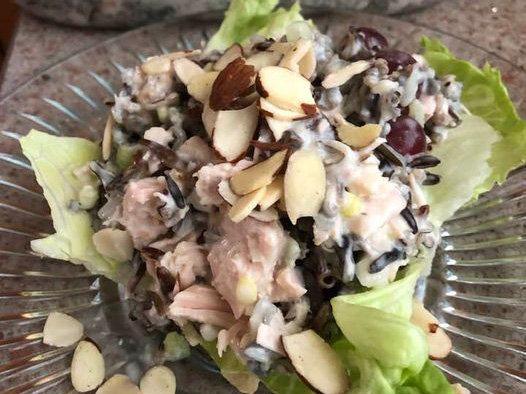

Wild Rice Salad

Description
This wild rice salad is easy to make and tastes wonderful. You can use either turkey or chicken. You can serve it plain, on salad greens, or in a pita; it's very versatile. If in season, try substituting black cherries for the grapes.
Ingredients
- 1 (6 ounce) package wild rice
- ¾ cup light mayonnaise
- 1 teaspoon white vinegar
- 1 teaspoon white sugar
- alt and pepper to taste
- 2 cups cooked, cubed turkey meat
- ¼ cup diced green onion
- 1 cup seedless red grapes
- 6 ounces blanched slivered almonds
Steps
- Cook rice according to package directions. Remove from heat and set aside to cool.
- Whisk together mayonnaise, vinegar, sugar, salt, and pepper in a medium bowl. Stir in rice, turkey, onion, and grapes until evenly coated with dressing. Cover and refrigerate for 1 to 2 hours.
- Sprinkle slivered almonds over salad before serving.
Back